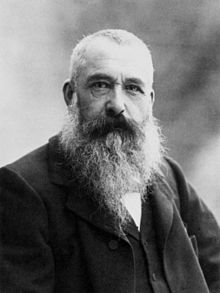

Biografía
Claude Monet es un pintor francés conocido por su aportación en el movimiento artístico denominado Impresionismo. Nacido en París, el 14 de noviembre de 1840, pasa su infancia en Normandía, en la ciudad de El Havre, donde se instala junto a su familia con tan sólo cinco años. Poco a poco, el joven Monet logra desarrollar su pasión, empezando por la caricatura y, en 1859, estudiando pintura en la Academia Suiza de París, con el apoyo de su padre. Su marcha a Argelia al servicio militar en 1861 interrumpe sus estudios, sin embargo, continúa experimentando diferentes efectos artísticos. A su vuelta a París en 1862 tras una enfermedad que contrae (pleuresía), conoce al pintor suizo Charles Gleyre y trabaja junto a Alfred Sisley, Auguste Renoir y Frédéric Bazille, que se convertirán en buenos amigos.
Durante la segunda mitad de la década de 1860, Monet pinta un estilo que recuerda al de Edouard Manet. A medida que amplía su estilo, Claude Monet se enfrentará a dificultades económicas, ya que ningún Salón quiere exponer sus lienzos, a pesar del éxito de La Femme en robe verte, que representa a Camille Doncieux, la mujer que se convertirá en su esposa en 1870. Posteriormente, Monet viaja a Londres durante la Guerra franco-prusiana y conoce al comerciante Paul Durand-Ruel, quien le comprará sus lienzos y contribuirá a la difusión de las obras de los impresionistas.
Una parte del futuro grupo de impresionistas se une en 1872 en Argenteuil —formada por Monet, Manet y Renoir—, y el primer lienzo que surgirá de este movimiento artístico será Impresión, sol naciente, y que, de hecho, dará su nombre al movimiento. Esta pintura se presentará al público en la primera exposición impresionista en 1874. Este será el año que marcará el apogeo del Impresionismo y definirá a Claude Monet como uno de los creadores del movimiento. A pesar de la crítica satírica, los impresionistas presentarán seis exposiciones hasta 1882. Las continuas compras de Durant-Ruel le permitirán a Claude Monet vivir dignamente sin necesidad de participar en los Salones oficiales.
En 1883, se traslada definitivamente a Giverny con su amiga Alice Hoschedé, los seis hijos que ella tuvo con Ernest Hoschedé y sus dos hijos propios; su último hijo no llegará a conocer a su madre, muerta en el parto en 1879. Giverny se convertirá en un verdadero remanso de paz para Monet. A pesar de los numerosos viajes que realizará para inspirarse con los diferentes paisajes franceses, finalmente será en 1890 cuando decidirá comprar la casa en la que vivía en Giverny, y cuyos jardines le inspirarán para crear obras tan famosas hoy en día como la serie de los Nenúfares. El 5 de diciembre de 1926, Monet fallece en su casa de Giverny rodeado por su familia. Tras su fallecimiento, se creará la fundación de Monet para conservar el patrimonio de Giverny y abrirlo al público.
Visitar Giverny es ideal para descubrir el entorno que ha sido una gran fuente de inspiración para el pintor, y contemplar las pinturas de Claude Monet y otros grandes artistas impresionistas en el Museo de los Impresionismos.